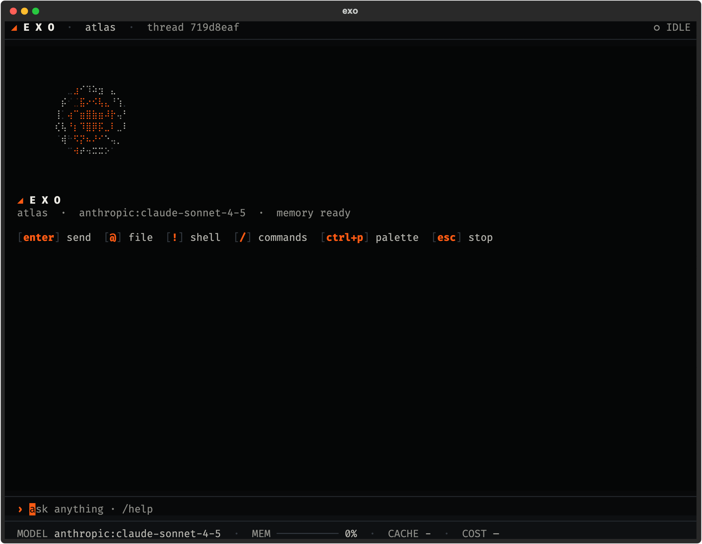
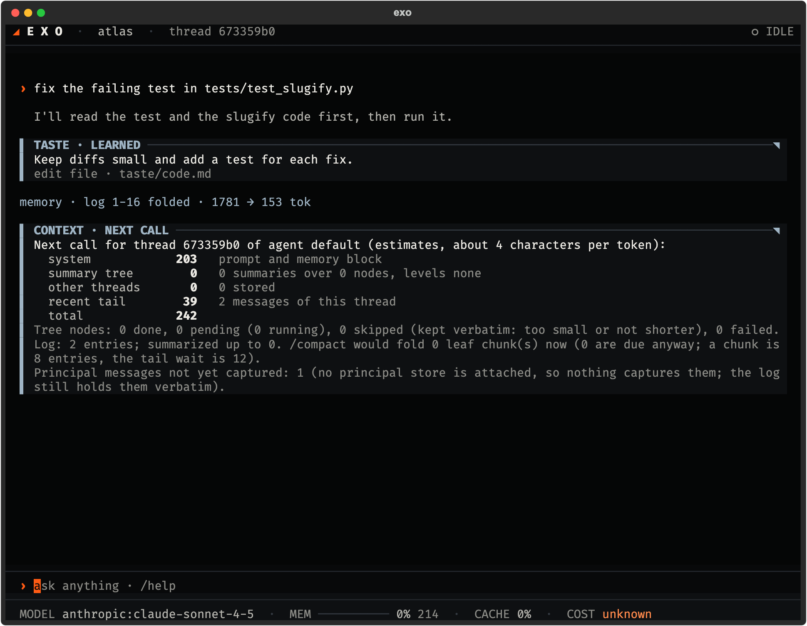

Status strip
The route that served the call (orange, with the requested model, when it fell back), a memory gauge, cache share of the last call, session cost and open findings.
Project Exo · Terminal client
exo opens the terminal client for Exo. It looks like a quiet shell, and it reports what the system is doing: which model served the call, how full memory is, how much came from the cache, what it cost.
01 / Overview
The client is a Textual app over the Exo protocol. It holds no state of its own: every line comes from an event the core sent, so a second window or the web app sees the same thing. It follows the site design language: hairlines instead of boxes, mono capitals for labels, orange only for the one thing that needs you.
Status strip
The route that served the call (orange, with the requested model, when it fell back), a memory gauge, cache share of the last call, session cost and open findings.
Activity you can read
One line per tool with its state, short arguments and elapsed time. A wire with a travelling packet shows data in flight. Nothing moves at rest.
Approvals in place
A panel with an orange rule shows the exact text that will go out. The answer is bound to it. Edit the text and the gate asks again.
Jobs, peers, memory
A finished background job, a message from a peer session and a folded stretch of memory each show as one short line with a cold label.
A first run that teaches
The first launch starts with /intro and small tips the first time something comes up. /tutorial off turns them off.
Plain when you need it
NO_COLOR drops the colours and keeps the shape. EXO_REDUCED_MOTION=1 turns off the boot, spinner, pulse and blink.
02 / Screenshots
The demo agent is called atlas and is fixing a failing test in a small library. The text is scripted for the screenshot. The layout is the real client.

Start
The hero is the site motif drawn in braille, turning once every 16 seconds. It goes away with your first message. Key hints sit below it.

A turn
Each tool is one line: name, arguments, elapsed time. The strip below shows the served model, memory, cache and cost. Press ctrl+o to expand a tool line.

Gate
The gate stops anything public or irreversible. The panel shows what will happen, and the answer is tied to that exact text. Keys: o once, a always, d deny.

Memory
/context: what the next call carriesA report of the next call, split into the agent summary tree, the thread tail and notes from other threads, with the log position and how many of your messages still wait to be captured.

Jobs
A long test run starts in the background. Stopping the turn leaves the job alone. When the job ends, the agent gets a notice and the transcript shows one line.
03 / Key commands
/help lists everything. These are the ones you will use first.
/ | Run a command. |
|---|---|
@ | Attach a file or note to the message. |
! | Run a system command. |
| ctrl+p | Open the searchable list of every action. |
| ctrl+o | Expand or fold a tool line. |
| ctrl+c | Stop the turn. Background jobs keep running. Esc never stops a turn. |
| type while busy | Steers the running turn. |
/new /sessions | Start a thread, list threads. Same memory in all. |
|---|---|
/fork /undo | Branch from here, or hide the last turn. |
/context | See what the next call will carry. |
/compact | Fold what is ready, capturing your words first. |
/model /default | Pick a model, set the default. |
/usage /trace | Tokens, timing and estimated cost per turn. |
/findings | Problems the harness found in itself. |
/peers /send | See and message other sessions. |
/handoff | Write a note for the next session. |
04 / Install
The repository is public and remains an early preview. The installer prints its plan first, --dry-run changes nothing. With claude on your PATH, Exo runs on your Claude Code login, or the first run walks you to a model key. exo update upgrades.
Prefer a browser? The web app runs on the same core and the same memory.